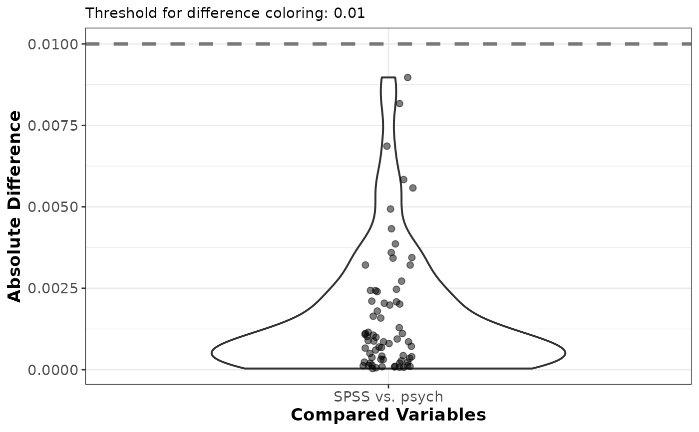

Plot method for the efa_compare() function showing the distribution of the
absolute differences between the two compared objects as a violin plot with
jittered points. Differences above the threshold are highlighted.
Usage
# S3 method for class 'efa_compare'
plot(x, ...)Arguments
- x
list. An object of class
efa_compare(output from theefa_compare()function).- ...
not used.
Value
A ggplot object showing the absolute differences, with differences
above plot_red highlighted in red.
Examples
# A type SPSS EFA to mimick the SPSS implementation
EFA_SPSS_5 <- efa_fit(IDS2_R, n_factors = 5,
estimate_control = estimate_control(type = "SPSS"),
rotate_control = rotate_control(type = "SPSS"))
#> Warning: Reached the maximum number of iterations without convergence; results may not
#> be interpretable.
# A type psych EFA to mimick the psych::fa() implementation
EFA_psych_5 <- efa_fit(IDS2_R, n_factors = 5,
estimate_control = estimate_control(type = "psych"),
rotate_control = rotate_control(type = "psych"))
# compare the two and plot the differences
comp <- efa_compare(EFA_SPSS_5$unrot_loadings, EFA_psych_5$unrot_loadings,
x_labels = c("SPSS", "psych"))
plot(comp)
